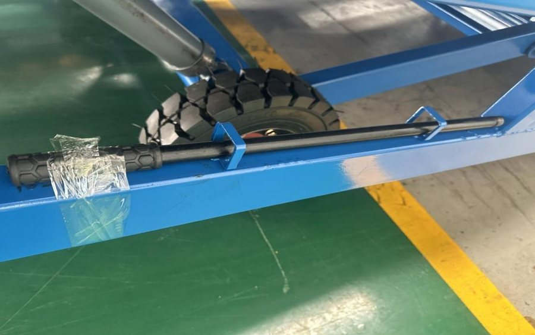
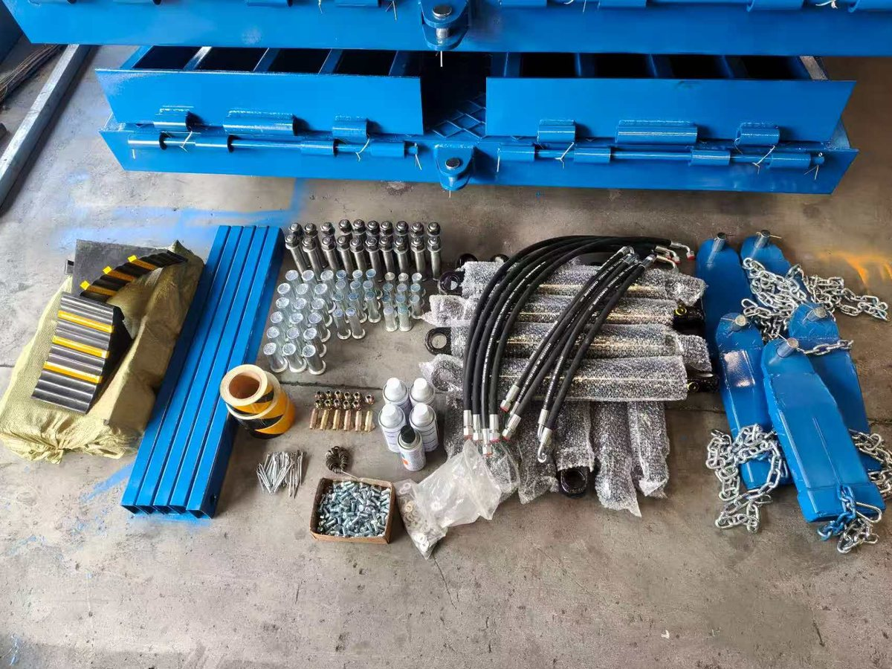
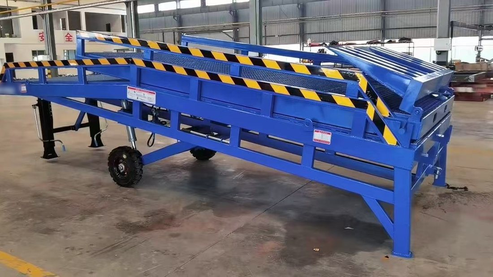
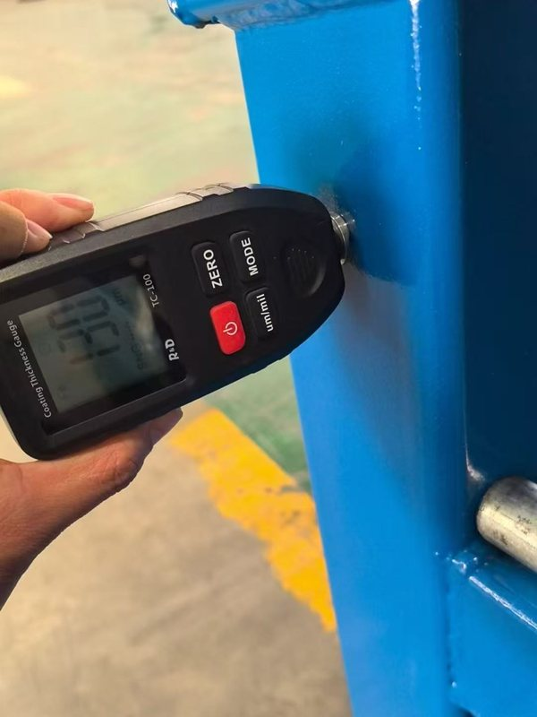
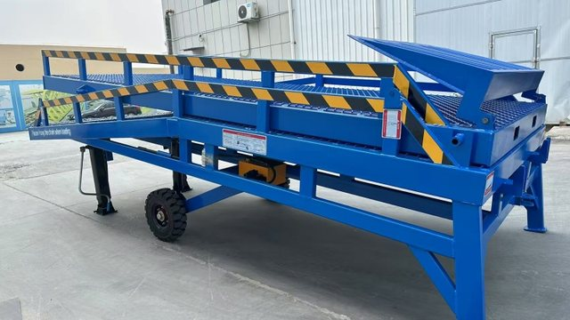

지게차가 컨테이너 안까지 그대로 올라갑니다
도크가 없는 창고와 야적장에서 쓰는 이동식 도크입니다. 기본형과 2단 분리형, 6톤부터 15톤까지 있고, 수동 유압으로 차 바닥 높이(1.1~1.8m)에 맞춥니다. 폭은 모두 2.2m입니다.
기본형과 2단 분리형, 두 가지가 있습니다
쓰는 방법은 같습니다. 받아서 놓는 방식과 보관이 다릅니다.

기본형
경사와 받침이 한 몸으로 된 일체형입니다. 내려놓고 유압으로 높이만 맞추면 바로 씁니다.
- 조립 없이 바로 사용
- 한곳에 두고 계속 쓰는 현장에

2단 분리형
경사 부분이 받침 부분 위에 포개진 채로 옵니다. 현장에서 지게차로 들어 이어 붙여 씁니다.
- 접으면 길이 5.75m라 운반과 보관이 쉬움
- 지게차 한 대로 현장에서 펼침
높이는 수동 유압으로 올립니다
손잡이를 저으면 유압 실린더 두 개가 도크를 밀어 올립니다. 전기도 배터리도 쓰지 않습니다.
- 전기가 필요 없는 수동 유압 펌프전기가 없는 야적장에서도 그대로 씁니다.
- 지름 80mm 유압 실린더 2개손잡이를 저으면 실린더가 바퀴 축을 밀어 도크가 올라갑니다.
- 차 바닥 높이 1.1~1.8m에 맞춥니다밸브를 풀면 내려옵니다. 12·15톤은 1.2~1.8m입니다.
- 32MPa 고압 유압 호스도크 전용 일체형 펌프와 실린더를 고압 호스로 잇습니다.



가장 먼저 보셔야 할 세 가지

두꺼운 강철 뼈대
칠하기 전 뼈대입니다. 길이 방향으로 주 뼈대 5줄이 지나가고, 가로대를 약 40cm 간격으로 촘촘히 넣었습니다.
- 주 뼈대 160×80×4mm + 120×60×4mm 각관 5줄 (10톤)
- 보조 뼈대 100×50×4mm 각관
- 바닥 4mm 철판 + 8mm 다이아몬드 망

전기 없이 유압으로 높이 조절
수동 유압 펌프의 손잡이를 저으면 도크가 올라갑니다. 전기도 배터리도 필요 없어서 야적장 어디서나 씁니다.
- 수동 유압 펌프로 1.1 ~ 1.8m
- 한 사람이 손으로 올리고 내림
- 컨테이너, 탑차, 화물차 높이에 모두 맞춤

펑크 없는 솔리드 타이어 바퀴
속이 꽉 찬 고무 타이어라 펑크가 나지 않습니다. 유압 실린더 두 개가 이 바퀴 축을 밀어 도크를 올리고, 옮길 때도 이 바퀴로 끌어 옮깁니다.
- 6~10톤 600-9, 12·15톤 700-9 솔리드 타이어
- 유압 실린더 지름 80mm × 2개
- 바퀴 고임목 기본 포함
그 밖에 따져 볼 여섯 가지



같이 오는 부속
고임목, 체인, 견인봉이 도크와 함께 옵니다. 사진은 출고 전에 부속을 펼쳐 놓은 모습입니다.
- 바퀴 고임목
- 차에 거는 체인
- 지게차 견인봉
색상은 주문할 때 바꿀 수 있습니다
기본은 파랑입니다. 원하는 색을 알려 주시면 그 색으로 칠해서 만듭니다.


녹을 벗기고 구워서 칠합니다
쇼트 블라스트로 녹을 벗긴 뒤 정전 분체 도장을 하고 구워서 마감합니다. 공장에서 잰 도막 두께는 120~141µm입니다.


몇 톤이 필요하세요?
지게차 무게와 한 번에 싣는 짐 무게를 더한 값보다 큰 톤수를 고르면 됩니다. 숫자를 누르면 규격이 바뀝니다.
길이 11.3m = 꼬리판 0.8 + 경사 7.1 + 수평 3 + 걸침판 0.4m (10톤 기준). 높이는 수동 유압 펌프로 맞춥니다.
기본형과 2단 분리형 같은 규격
10톤
3톤 지게차 작업에 맞습니다
예: 지게차 4.3톤 + 짐 3톤 = 7.3톤. 여유를 두고 고르는 규격입니다.
- 올릴 수 있는 무게10톤
- 유압 높이 조절1.1 ~ 1.8m
- 주 뼈대160×80×4 + 120×60×4 각관 5줄
- 길이 × 폭11.3m × 2.2m
- 2단 분리형 접은 길이5.75m
- 올리는 방식수동 유압 펌프 (전기 필요 없음)
톤수 계산해 보기
지게차 제원표에 있는 자체 중량을 넣으세요.
기본형은 유압으로 올려 두고, 차를 대면 됩니다
컨테이너나 화물차에 대는 순서입니다. 2단 분리형도 펼친 뒤에는 똑같이 씁니다.

- 꼬리판을 바닥에 내립니다
- 유압 펌프 밸브를 잠급니다
- 손잡이를 저어 차 바닥보다 조금 높게 올립니다
- 차를 걸침판 아래로 대고 주차 브레이크를 겁니다
- 밸브를 풀어 걸침판을 차 바닥에 걸치고 체인으로 묶습니다
- 바퀴 뒤에 고임목을 놓습니다
- 유압 실린더의 압력을 완전히 뺍니다
- 받침 다리를 내려 도크를 받쳐 둡니다
실제로 쓰실 때는 제품에 붙은 사용 설명과 설명서를 따라 주세요.
접어서 옮기고, 현장에서 펼칩니다
2단 분리형은 경사 부분이 받침 부분 위에 포개진 채로 옵니다. 접은 길이는 5.75m, 펼치면 11.3m입니다. 지게차로 경사 부분을 들어 받침 부분 끝 고리에 걸면 끝납니다.

- 접힌 도크를 쓸 자리에 둡니다바퀴와 받침 다리가 달린 받침 부분이 아래에 있습니다.
- 위에 포개진 경사 부분을 지게차로 듭니다포크를 경사 부분의 포크 구멍에 맞춰 넣고 들어 올립니다.
- 받침 부분 끝 고리에 걸어 내려놓습니다두 토막이 이어지면 전체 길이 11.3m가 됩니다.
- 유압으로 높이를 맞추고 씁니다수동 유압 펌프로 차 바닥 높이에 맞춥니다.




규격과 도면
| 톤수 | 주 뼈대 | 바닥 철판 | 유압 높이 조절 | 바퀴 (솔리드) | 받침 다리 | 길이 × 폭 |
|---|
톤수가 올라가면 주 뼈대와 바닥 철판이 두꺼워집니다. 바닥 철판 위에는 모두 8mm 다이아몬드 망을 덮고, 올리는 방식은 모두 수동 유압 펌프입니다. 20톤도 주문 제작할 수 있습니다.
10톤 상세 사양
- 정격 하중
- 10,000kg
- 유압 높이 조절
- 1,100 ~ 1,800mm
- 전체 크기
- 길이 11,300 × 폭 2,200mm
- 길이 구성
- 꼬리판 800 + 경사 7,100 + 수평 3,000 + 걸침판 400
- 2단 분리형 접은 크기
- 5,750 × 2,200 × 2,060mm
- 주 뼈대
- 160×80×4 + 120×60×4mm 각관 5줄
- 가로대 간격
- 약 40cm
- 보조 뼈대
- 100×50×4mm 각관
- 바닥
- 4mm 철판 + 8mm 다이아몬드 망
- 양옆 턱
- 높이 200mm (40×80×3mm 각관)
- 올리는 방식
- 도크 전용 일체형 수동 유압 펌프
- 유압 실린더
- 지름 80mm × 2개
- 유압 호스
- 32MPa 고압 호스
- 바퀴
- 600-9 솔리드 타이어 2개600-9는 타이어 폭 6인치(약 15cm), 휠 지름 9인치라는 뜻입니다. 바깥 지름은 약 54cm입니다. 지게차에 쓰는 통고무 타이어라 펑크가 나지 않고 공기를 넣을 필요도 없습니다.
- 받침 다리
- 손으로 돌리는 다리 2개, 400mm 조절
- 컨테이너 고정
- 몸체 용접 고리 + 강철 체인
- 도장
- 쇼트 블라스트 녹 제거 + 정전 분체 도장
- 색상
- 파랑 (주문 시 다른 색 가능)
- 같이 오는 것
- 바퀴 고임목, 차에 거는 체인, 지게차 견인봉
도면
자주 묻는 질문
전기가 없는 야적장에서도 쓸 수 있나요?
네. 손으로 젓는 유압 펌프로 높이를 올리고 내리기 때문에 전기가 필요 없습니다.
몇 톤을 골라야 할지 모르겠습니다.
지게차 자체 무게에 한 번에 싣는 짐 무게를 더하세요. 그 값보다 큰 톤수 중에서 여유 있는 쪽을 고릅니다. 위쪽 계산기에 넣어 보시거나, 지게차 모델명을 알려 주시면 골라 드립니다.
기본형과 2단 분리형은 무엇이 다른가요?
기본형은 한 몸으로 되어 있어 내려놓으면 바로 씁니다. 2단 분리형은 경사 부분이 받침 부분 위에 포개져 있어(접은 길이 5.75m) 운반과 보관이 쉽고, 현장에서 지게차로 펼쳐 씁니다. 쓰는 방법은 둘이 같습니다.
길이나 폭을 바꿔서 주문할 수 있나요?
가능합니다. 현장 폭, 차 종류, 지게차 크기를 알려 주시면 맞는 치수로 견적을 드립니다.
옮길 때는 어떻게 하나요?
바퀴가 달려 있어 지게차로 끌어서 옮깁니다. 같이 오는 견인봉을 끼워 지게차에 걸면 됩니다. 고정 공사는 하지 않습니다.
바퀴는 어떤 타이어인가요?
솔리드 타이어입니다. 속이 꽉 찬 고무라 펑크가 나지 않습니다. 6~10톤은 600-9, 12·15톤은 700-9 규격입니다.
색상을 바꿀 수 있나요?
네. 기본은 파랑이고, 주문할 때 원하는 색으로 칠해서 만듭니다. 실제 색은 주문 전에 색 견본으로 확인해 드립니다.
2단 분리형은 접으면 얼마나 줄어드나요?
접으면 길이 5.75m, 폭 2.2m, 높이 2.06m입니다(10톤 기준). 펼치면 11.3m가 됩니다.